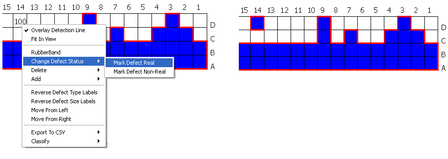
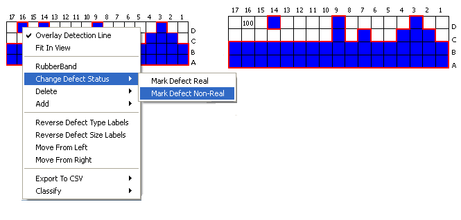

You can change
the defect status from a detection line graph.
Procedure
- Right-click on the detection
line graph. A menu appears.
- Select Change Defect Status from the menu.
This option is available only if the Must
Catch Defects option is also checked in the Parameters
dialog box (refer to section “Specifying a Must Catch Defects File” for details). There are two
different sub-options available:
- Figure 2 shows an example of changing a defect’s
status from non-real to real.
Figure 2. Defect Status Changed
from Non-Real to Real
- Figure 2 shows an example of changing a defect’s
status from real to non-real.
Figure 3. Defect Status Changed
from Real to Non-Real
Note: If
RubberBand mode is active, the Defect Status of selected defects
can be changed from Real to Non-Real as well as from Real to Non-Real.